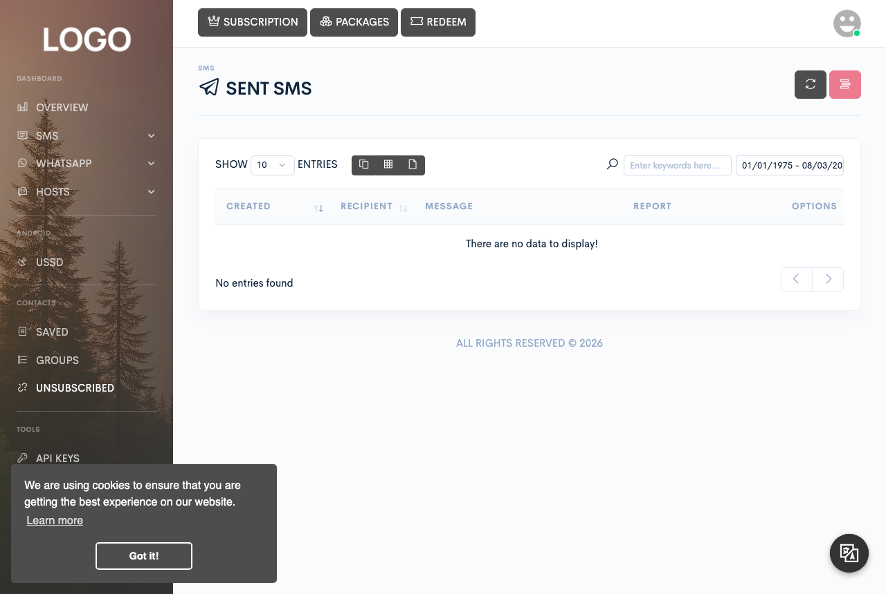

Messaging
Sending SMS
Send one-off texts, run bulk campaigns, and keep track of every SMS that goes out or comes in.

SMS lives under its own menu in the dashboard sidebar, visible only to accounts whose subscription includes SMS: Queue, Sent, Received, Campaigns, and Scheduled — plus Transactions for partner accounts.
Sending a single message
From SMS → Queue, Quick send opens a one-off send form. Enter a recipient number, a message, and choose a sending mode: device or gateway/credits.
Every message is checked against a minimum length (5 characters by default) and, if your site sets one, a maximum — there is no upper limit by default, and messages that go over an active maximum are rejected rather than sent, not trimmed. There's no built-in splitting either: Zender queues the message exactly as written, and if it ends up longer than a single SMS segment, breaking it into multiple parts for delivery is handled by the sending device or gateway, the same as it would be for any text messaging app.
If your plan includes a footer mark, your site's configured signature text ("Sent by Zender" out of the box) is appended on a new line before the message is queued — but only for device-mode sends.
Choosing a device or gateway
Every send form offers the same choice, controlled by a mode selector:
- Device mode — the message is queued against one of your Android gateway devices (managed under Hosts → Android; see the Android gateway page under Servers & devices). You also pick a SIM slot and whether the message is high priority.
- Credits/gateway mode — the message is sent through an installed third-party SMS gateway, or through another user's device shared globally, and its cost is deducted from your account credits.
Both Quick send and the bulk forms below expose this same switch, so a single send — or campaign — can only target one mode at a time; you can't mix device and gateway recipients in one send.
Message templates, translation, and spintax
Bulk and spreadsheet sends let you pick a saved message template (Tools → Templates) to fill the message box instead of typing it out every time.
The message box also has a built-in translator: type your message, pick a target language, and it's translated in place before you send — handy when your recipients don't share your language.
Every send form also supports spintax: wrap alternatives in curly
braces separated by pipes, and the platform picks one at random per message — for
example, Tom is a {good|bad} cat sends either "Tom is a good cat" or
"Tom is a bad cat." Alternatives can be nested inside each other.
Bulk forms also support shortcodes that get filled in per recipient — the contact's name and number, the group name, the current date and time, and unsubscribe links or keywords — shown directly in the send form. The spreadsheet form uses a similar set, plus one for any extra columns in your sheet.
Delivery statuses
The Queue, Sent, and Campaigns tables report one of four statuses per message:
| Status | Meaning |
|---|---|
| Pending | Queued and waiting to be picked up by the target device or gateway. |
| Queued | Accepted by a gateway that reports delivery asynchronously, awaiting its callback. |
| Sent | Confirmed sent — by the device, or immediately by a gateway that doesn't use callbacks. |
| Failed | The device or gateway reported it could not deliver the message. |
For device-mode messages, the report also shows the device's own delivery code alongside the status above, whenever the device has reported one.
Bulk sending from a spreadsheet
From SMS → Campaigns, Bulk send lets you paste numbers and/or pick contact groups directly in the form; Send from Excel lets you upload a spreadsheet instead.
The spreadsheet must be an .xlsx file. A ready-to-fill template is
linked directly from the upload form. Your header row needs three columns, by
name: phone, sim, and priority — if any of
the three is missing, the whole upload is rejected before anything is queued.
Both bulk forms let you name the send as a campaign; every recipient from that submission is grouped under it and appears on the Campaigns page, split evenly across whichever devices or gateways you selected.